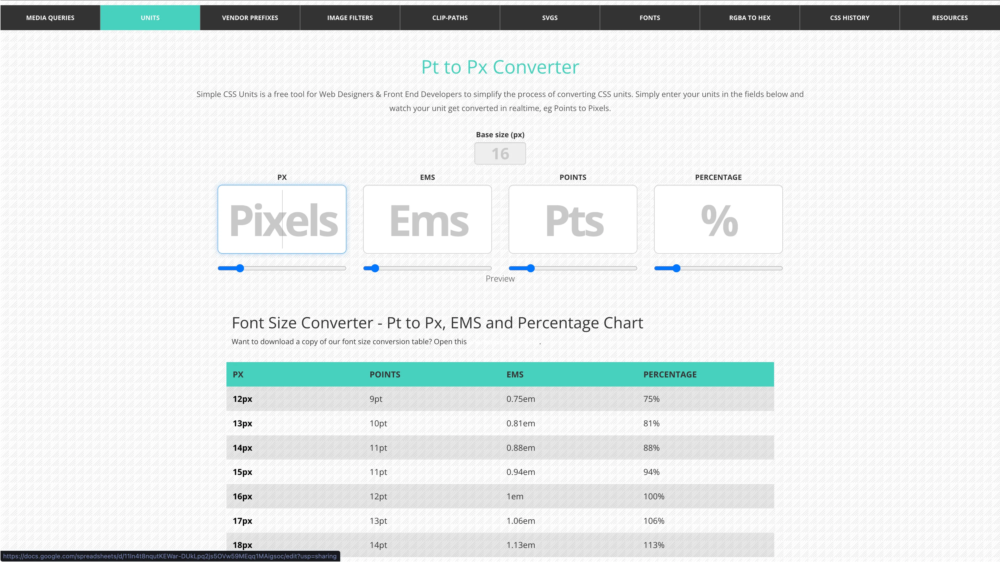
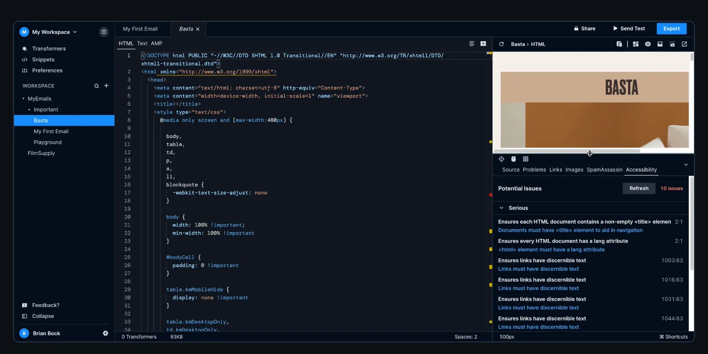
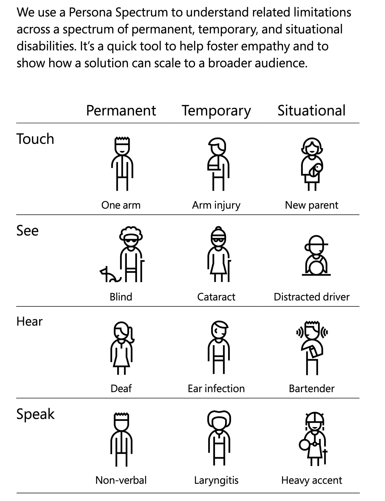
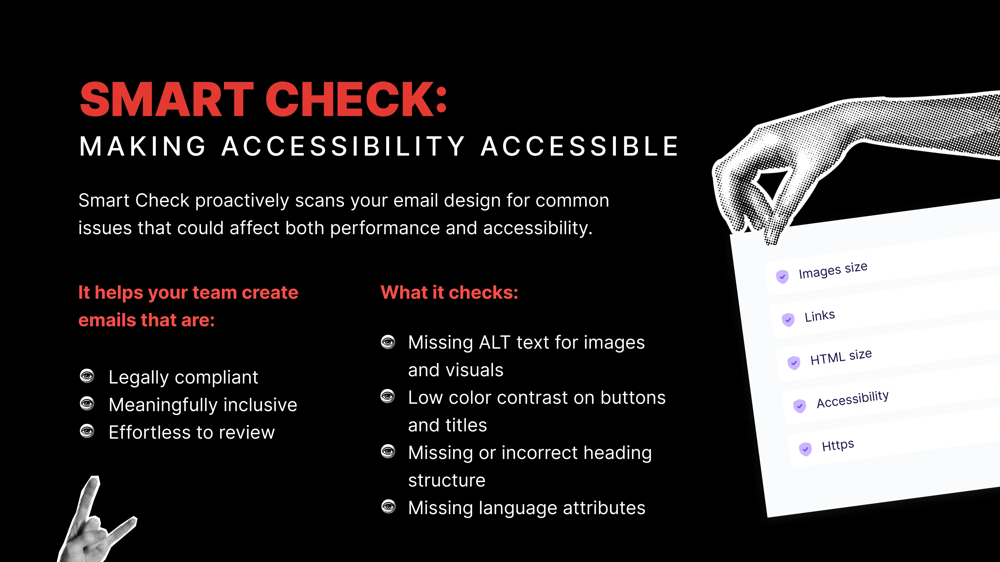
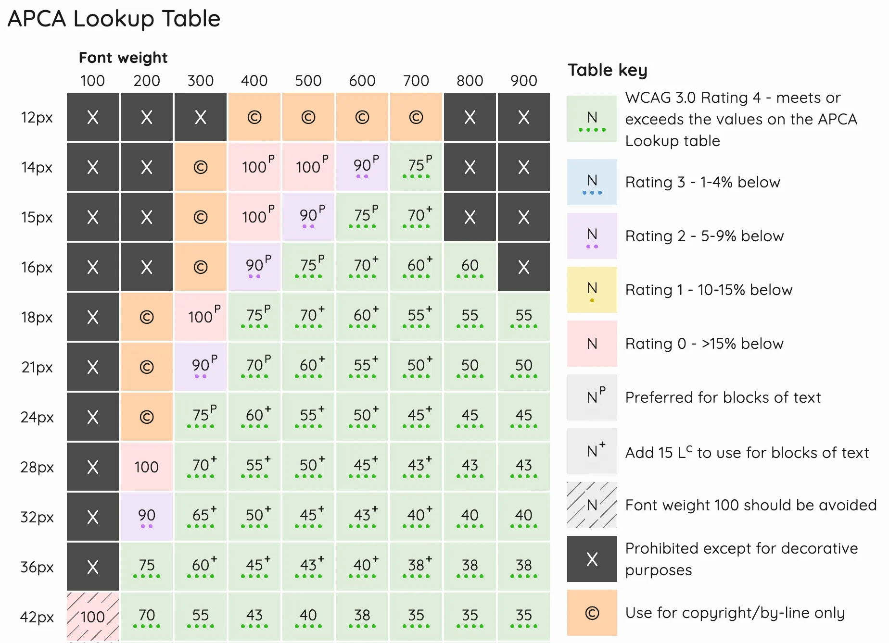
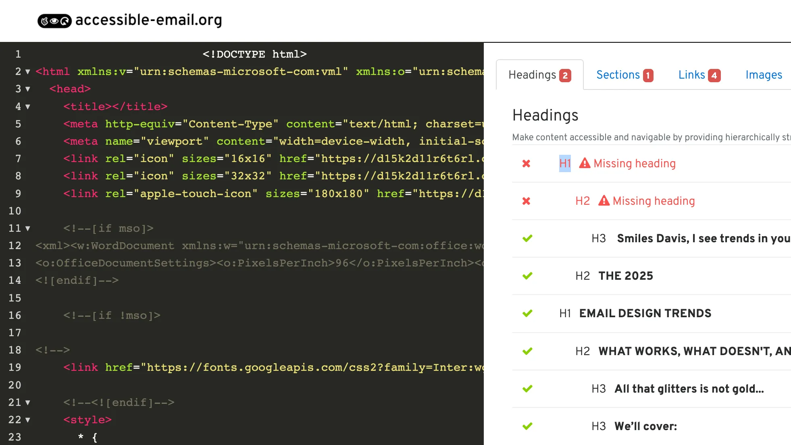

Accessibility in email is often treated like the broccoli of design. You know you should do it, but it feels like a chore. Add the alt text, bump up the font size, check the box, and move on.
The truth is that accessibility is not a burden. It is a design superpower. When you design for everyone, you improve the experience for everyone. That includes screen reader users, older adults, mobile-first readers, and neurodivergent folks.
With new regulations in Europe and our own survey data showing big gaps, now is the time to shift the mindset. Accessibility is not compliance. It is craft. It is responsibility. And it is a team sport where writers, designers, developers, and platforms all share the load.
The good news is you do not have to figure it out alone. There are powerful, practical tools that can help you make emails more inclusive without slowing down your workflow. Used well, they go beyond compliance to create emails that are easier to read, more engaging, and more human.
To explore what that looks like, we asked accessibility experts Logan Sandrock Baird, Paul Airy, Jaina Mistry, and Mark Robbins to share their favorite tools and their best advice for getting started.
1. What are your favorite accessibility tools?
Jaina keeps it simple:
I’m a big fan of the Hemingway Editor for email copywriting. It helps you write more concisely and use language that’s easy to understand or even skim. And this colour contrast checker is a really simple tool to make sure your text is readable on your background colour of choice.

Paul builds on standards:
My go-to is the Web Content Accessibility Guidelines (WCAG), but I also rely on a couple of tools to support that work. I use colourcontrast.cc by Will Tarpey (feel free to buy him a coffee!) to check color contrast, which is also a favorite of Jaina’s, and the Pt to Px Converter together with contrast checkers to make sure my font sizes are sufficient for their weight.
I also use email rendering tools for checking that emails are accessible on mobile and in dark mode. These are often overlooked.

Mark reminds us that some tools are already in your pocket:
Use your own computer and smartphone. All modern operating systems have a ton of accessibility tools built in. Try turning some on and experiencing what it’s like to use them.
Additionally, the free email accessibility checker built into Parcel is excellent (I worked on it); it will flag issues and link you to guides that explain the issues in more detail. It’s also available in Customer.io, and we use it as the tool for the Email Markup Consortium accessibility reports.

Logan adds:
I’m a big fan of Microsoft’s Inclusive Design guides, which do a great job of explaining why designing inclusively benefits everyone as well as how to do that.

Closer to home, I find Beefree’s Smart Check feature to be very helpful in making sure that my images have alt text, my colors have enough contrast, my links aren’t broken, and my headline text is semantically formatted. It’s always helpful to have someone doublecheck your work, and Smart Check is a reliable second set of eyes. If you’d like to try Smart Check yourself, you can easily start a free trial of Beefree.

For a deeper dive into color contrast, I adore Contrast.tools. It uses APCA (Accessible Perceptual Contrast Algorithm) to factor in size, weight, and how colors appear in context.

If you’re not using Beefree and coding emails by hand, start with accessible-email.org. It’s full of tested code and clear guidance for building emails that work for everyone.

2. What are the best first steps?
Jaina says:
Take baby steps. Audit where you are right now. How accessible are your emails? Run colour contrast checks or use any of the accessibility checker tools out there. You may be surprised as to how accessible they might already be. Based on your audit, map out an accessibility plan of what you want to update, when, and why—and what’s the expected result. You don’t need to do it all at once.
Paul adds:
Try not to tackle everything at once. Take on one piece of content at a time. Start with the ones that are going to be the most beneficial to your recipients – those that engage visually, and those that engage audibly. Colour contrast and heading hierarchy are key. Work your way thoroughly through the WCAG for each piece of content. I’ve created a free tool, InTwelve™, to help you do this. If you need help, ask for an accessibility audit to find out where you should focus.
Mark keeps it simple:
Care. You don’t need to be an expert to get started. You don’t need to fix everything on day one. You just need to care about it, and you’ll get yourself there. Do some testing, find some issues, log them, and make improvements as and when you can.
Logan offers two easy steps:
I feel as though I’m echoing the other folks, but I would also encourage you to start small and achievable. Two super-easy first steps are to make sure you’re adding descriptive alt text to any images that contain content, and left-aligning any text over two sentences. The alt text helps screenreaders for the visually disabled, but also helps give context, if say, the recipient of your email has a poor data connection and the images don’t load. And left-aligning multiple lines of text makes it much easier for folks with dyslexia or other reading disabilities to comprehend your copy.
But what about dark mode?
Ah yes, dark mode. Beloved by night owls, accessibility advocates, and anyone who thinks bright white screens are an act of aggression.
Designing for dark mode isn’t just a trendy bonus. For many people, it reduces eye strain and makes reading easier. But it can also absolutely wreck your email if you're not paying attention.
Text can vanish. Logos can ghost. Icons can turn into mysterious little blobs. So what can you do?
Start by previewing your emails in dark mode. Don’t assume your lovely design will survive the switch. Check your buttons, backgrounds, and especially any images with transparency.
Here are a few tools that can help:
- Inbox Monster or Email on Acid: Both let you preview how your email renders in dark mode across popular clients.
- Parcel: Includes dark mode testing and flags issues that affect readability.
- Contrast.tools: Helpful for testing how your text holds up on both light and dark backgrounds.
- Smartphones and email clients: Yep, the ones in your pocket. Send yourself a test and flip on dark mode.
And remember, not everything has to be pixel-perfect in every dark mode variation. Prioritize readability, then tweak what feels off.
Dark mode is not a mystery. It just needs a little attention and some smart testing.
The Bigger Picture
Accessibility isn’t the cherry on top. It’s the whole cake.
It’s not just about screen readers or color contrast. It’s about designing emails that actually work for everyone. That means starting where you are, making small changes, and building better habits over time.
Whether you’re a writer, designer, developer, or juggling all three, you have a role to play. Collaboration matters. Curiosity gets results.
Skim your next email. Ask who might have trouble reading it. Fix one thing.
Accessibility is not the end of creativity. It’s the start of better email.